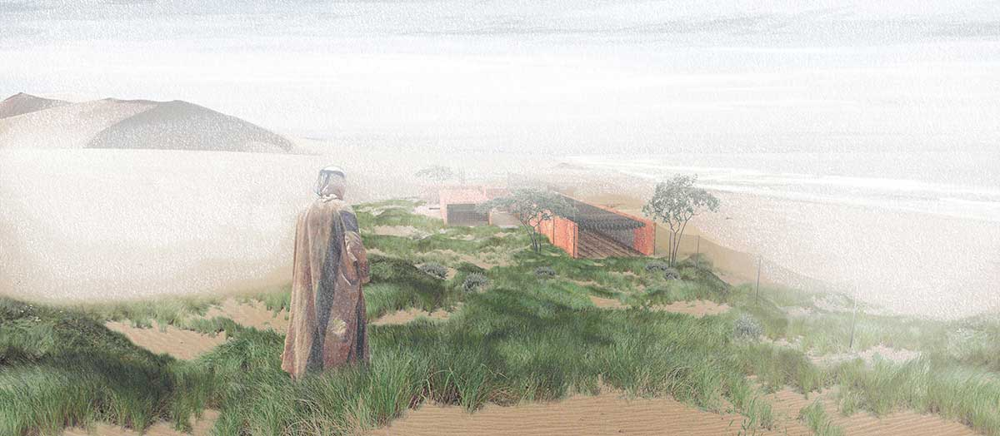
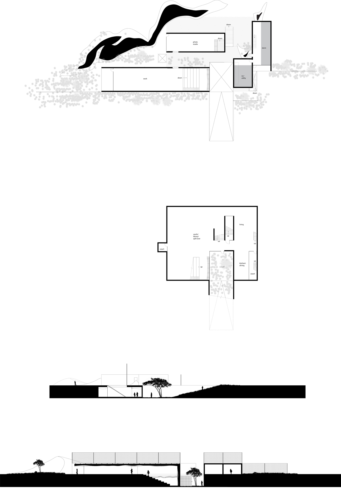
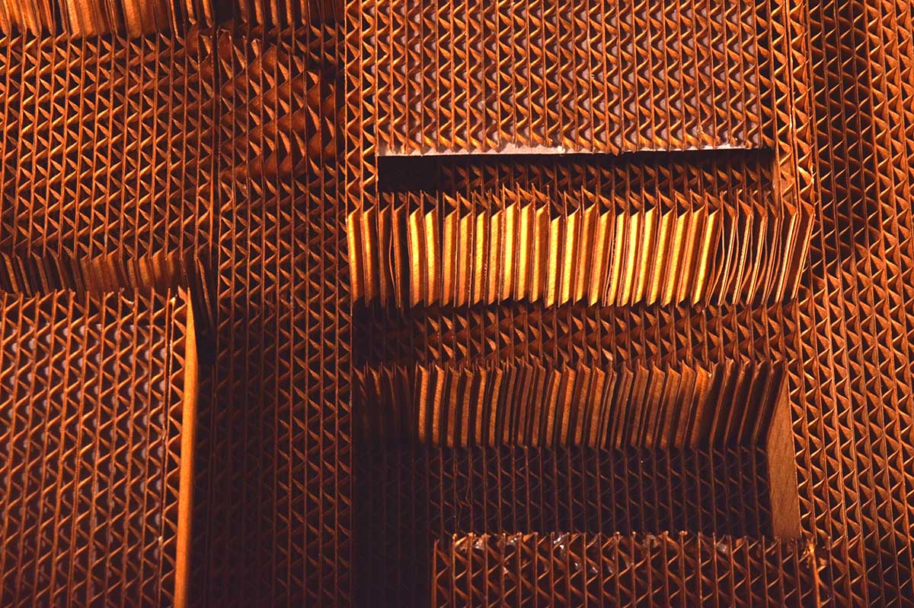
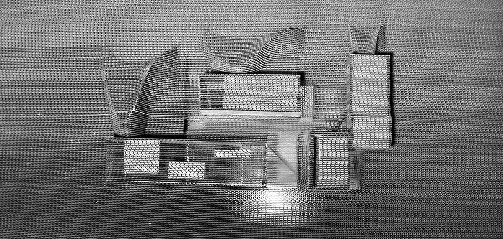
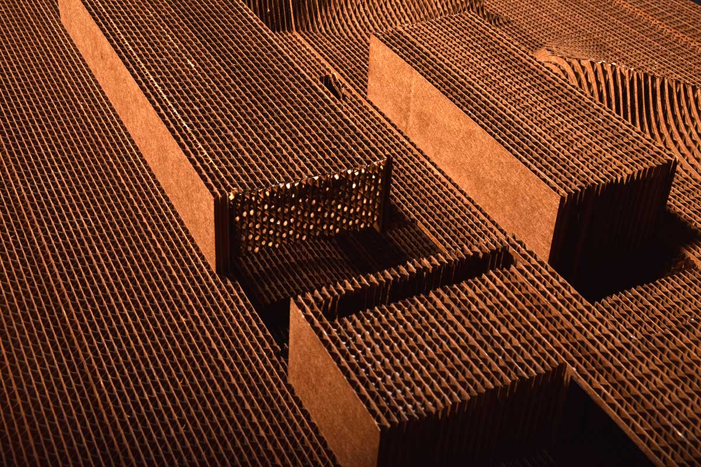
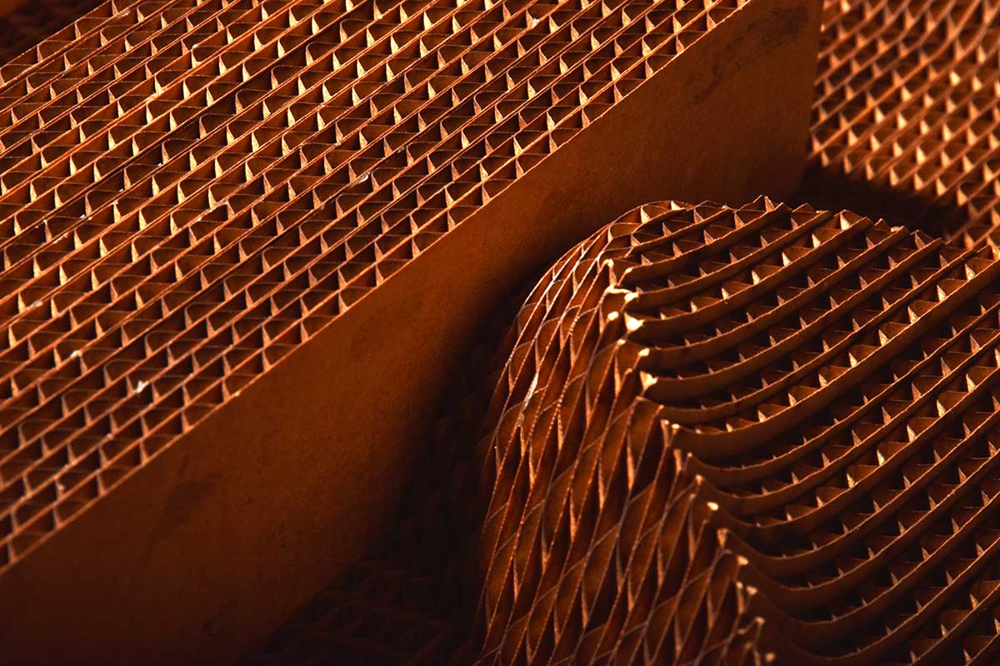

-

- 
-

- 
- 
- 
- 
- 
By accepting and celebrating the fact that the building will be covered by sand, the building embraces that it will
change the context and the context will change the building. Furthermore, the building uses the environment as an
advantage. Pitting the two most transformational environmental elements (wind and fog) against each other, a landscape
is created that the building inhabits which is wholly antithetical to its environment and at the same time completely
natural.
The celebration of transformation, while also wanting to be functional, facilitates the most turbulent causing form
of the rectangle to be used. Programs of transformation are oriented with their long side towards the wind to allow
for the most disruption. These are served by the programs of preservation which are oriented with the wind.
By collecting water from fog, the dunes can be frozen, or at least slowed, by the growth of plants. What would potentially
destroy the building is now, through the same process that creates the dunes, nurturing plants, and creating a kind
of forced colonial oasis in a valley of vegetation.